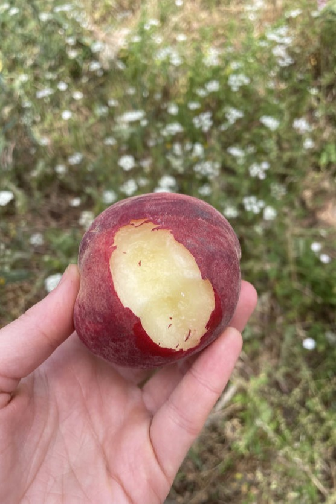
Looking for a videographer or video production in Coimbra?
While the city has plenty of talented filmmakers, you may run into a few common problems
It's tough to find a creative videographer or video production team that also understands the business and marketing side of things.
You're busy running a company, so you don't have time to work with a team whose communication, process and pricing isn't clear.
You also don't want a robotic, corporate video that doesn't feel true to you or your brand.
That’s where we come in, we’re Katy and Eugene, based just 30 mins from Coimbra in the beautiful Portuguese countryside. We combine beautiful filmmaking craft with video marketing knowledge. We handle everything with our simple, but effective videography process. Keeping things down to earth and human with our documentary style camera work and helping you feel as relaxed as possible on camera.
We have over 8 years experience and have worked with small businesses and grassroots organisations as well as more known names like CNBC and Michelle Obama. Ready to let your videos do the hard work for you, while you focus on running your business?
You want video production that looks amazing and brings in clients, but you don't want to spend weeks learning strategy, scripting, filming, and editing when you've got so many other things going on in your business. You're looking for something that feels true to your brand and you! And while hiring someone from Lisbon or Porto might mean paying extra travel fees, you also don't want to hire someone local who can operate a camera, but doesn't understand marketing, storytelling, and how businesses grow.
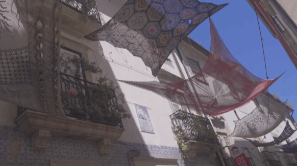
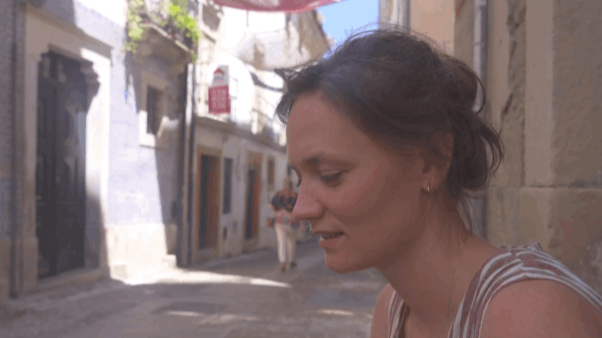
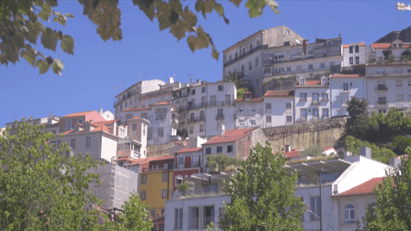
We're Katy and Eugene, two videographers, who handle the entire process, from research and strategy to planning, filming, editing, and delivery, so you can stay focused on running your business. Every video is built around a clear message and designed to connect with the right people, not just look nice. Our documentary-style approach helps you come across naturally, showing the human and relatable side of your business instead of creating something over done and corporate. You'll always know what's happening, because of our clear communication and pricing. And because we're based just 30 minutes from Coimbra, in the beautiful Portuguese countryside, you get the convenience of working with a local team.
Research
Wapping out the trusty notepad we research what you are selling, how it helps people and who it's for?
Planning
We take all this research and put it into a structure (hook, problem, solution and result) as well as planning all the details for filming, logistics, locations, equipment, shot lists and interview questions.
Filming
Up early for filming, we carefully consider, framing, sound, lighting, colour whilst making you and your team feel as comfortable on camera as possible.
Editing
Coffee and computer time, editing begins, always keeping your audience and the story arc front of mind, we create curiosity, laying down the audio, adding in the beautiful and flowing visuals, mixing pacing, matching music and colour correction. We then collaborate with you to discuss any changes.
Final Delivery
Always amazing to see a finished video coming together from just a few scribbles in a notepad. We send you the finished version for your website, instagram, presentation, youtube or wherever you need it. We also guide you on how to share your video so you can get the most out of it.
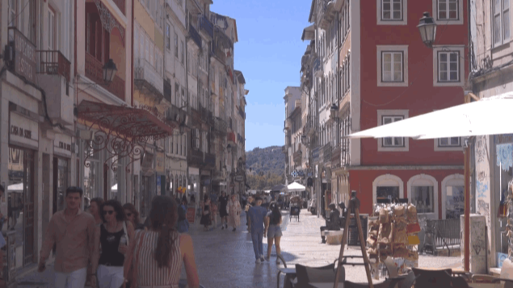
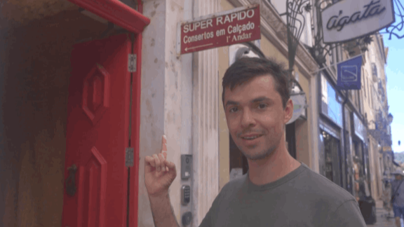
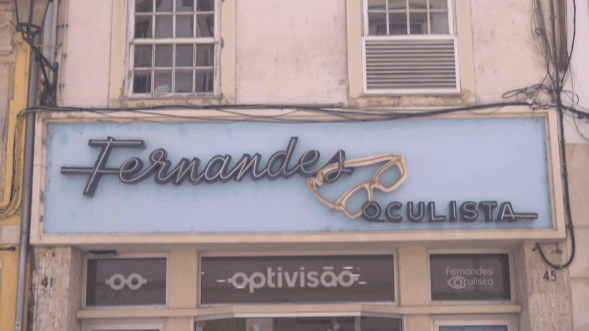
Every videography project is flexible and tailored to fit your specific needs, goals, and timeline. Here are some examples of what we can do.
Brand Video Production
This is for you if you want a beautiful video right at the top of your website homepage, if you are getting ready to open the doors to a brand-new project, or if you want a mini-documentary that tells the story behind why you do what you do.
Social Media Video Packages
This is a creative partnership for busy founders who are tired of the endless social media slog, but still want to show up online regularly while saving time for the work they love.
Travel & Lifestyle Videography
This is for you if you run a boutique hotel, an eco-lodge, an interior brand, or create beautiful lifestyle products, and you want to capture the real experience of your space or your pieces.
Charity & Impact Films
This is for you if you manage a grassroots organization, an NGO, or a social enterprise and want to turn complex issues into honest human stories that get supporters to donate, volunteer, and act.
Event Videographer
If you're hosting a conference, workshop, retreat, launch event, festival, or gathering and want to capture the energy of the day from presentations to behind-the-scenes.

Over the last 8 years, we’ve worked with grassroots organizations, independent shops, impact-driven brands, and a few larger names you might recognize, like CNBC and Michelle Obama.
What Our Clients Say:
"The easiest collaborative process imaginable. Relaxed and professional throughout."
– Olivia, Collective Wonder
"Guided me through scripting and planning, and made me feel completely at ease."
– Flora, Collingwood-Norris
"The videos are so beautiful and capture the heart... absolutely amazing."
– Madison, Not I But We
To keep our quality high and give you our full attention, we only take on a select few projects at a time.
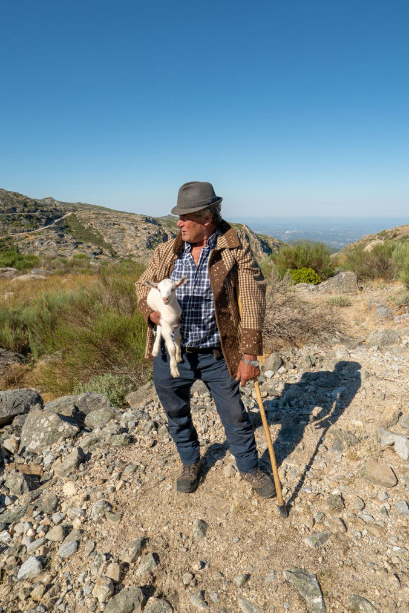
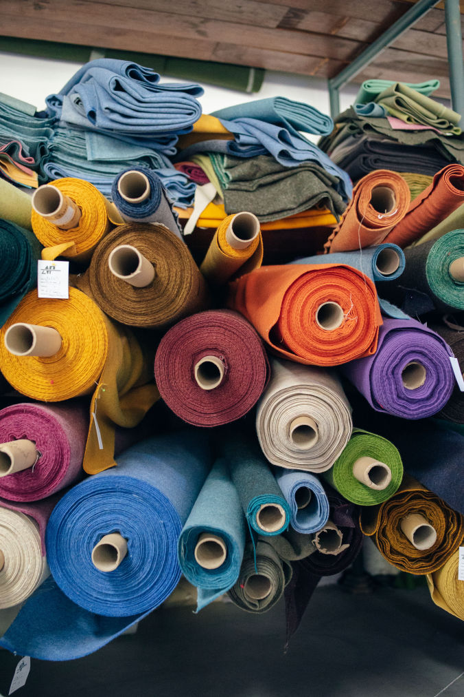
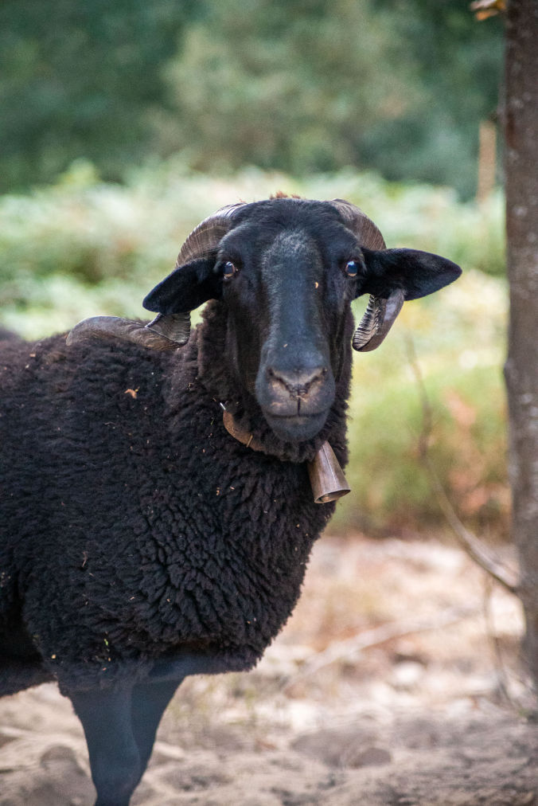
Ready to let your videos do the hard work for you while you focus on running your business? I'd love to chat about what you have in mind,
katy@munjiri.com
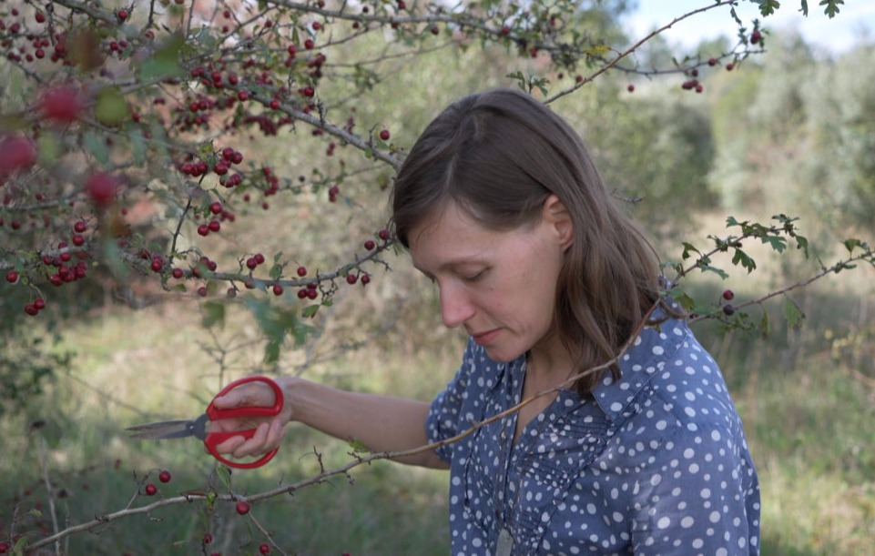
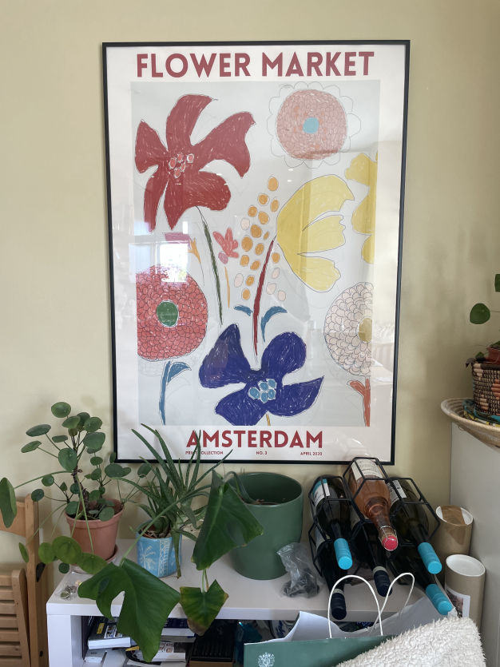
If you are planning a video production in Coimbra these beautiful locations might give you some ideas!
Old Town
Arco de Almedina: Medieval gate for silhouette shots.
Rua Ferreira Borges: Busy street with historic cafes.
Quebra-Costas: Steep, dramatic stone staircase.
The University
The Courtyard: Huge, open whitewashed square.
Biblioteca Joanina: Ornate, dark-wood historic library.
Couraça de Lisboa: High terrace overlooking the river.
Botanical Gardens
The Grand Staircase: Tiered 18th-century stone steps.
The Bamboo Grove: Tall bamboo filtering natural light.
The Iron Greenhouse: Vintage glass and metal framing.
Quinta das Lágrimas
Fonte das Lágrimas: Mossy, legendary stone fountain pool.
Gothic Ruins: Ivy-covered arches.
The Woods: Huge trees providing deep shade.